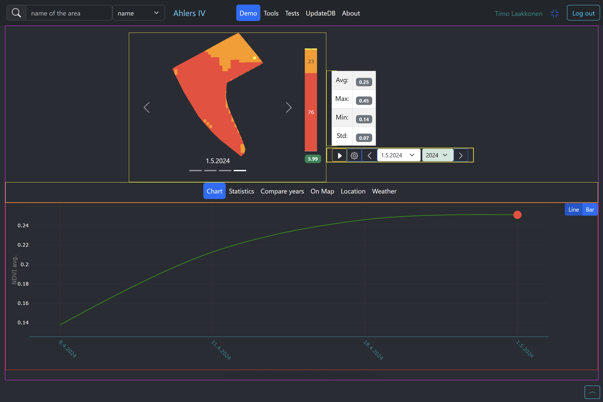

Planning documentation
tänne kuva kun grid-line is on
UI design class grid.css taking in action import ./grid.css className="grid-line"

TÄNNE kuvakaappauksia eri kohteista sekä liitä mkdocsiin planning document
The whole system will be MERN stack so choossen fromtend framework will be React UI component library Reactr Bootstap with extra 3rd party components if needed
App
└── Navbar
├── Search AOI
├── Authentication (Login/Register)
└── Demo Tools Tests
├── NDVI-image & data
├── NDVIcontrols
├── ActionBar
│ ├── Chart
│ ├── Statistics
│ ├── CompareYears
│ ├── OnMap
│ ├── Location
│ └── Weather
└── BottomBar
MAINITSE hookit yms. end-poinit johin otetaan ja miten yhteys piirrä MERMAID periaatteessa vain /image /list /activate /weather
Authentication (user-service)
token based Login popup windows is called in boastrap as Modal
need are
tähän mermaid (samat backendiin) login reg
navbar should contain search search input: assosiative predictive input, list of searh results choose item to show NDVI Image and data of AOI kerro tähän elementin nimi lista...
NDVI image + data
NDVi image should be showed and the images of the date change should be implemented. A good choice/alternative could be React Bootstrap Carousel
Scalebar
percentage of levels by the color (plotly)
Other controls
selectable yearlist selectable datelist progresbar for loading Actionbar Chart view Statistics/data view
map views
show on map location, React leaflet
Weather view
customHook for fetching data from weather end-point baseUrl joko dev localhost:5000 tai azure-address
extra features
Fullscreen set and exit bottombar iamges like filmroll - should be tabbed clikced for corresponding to select Image of the date neede, the UI - extra challenges to scroll too activeindex of images, selected outside of the filmroll
Autoplay by carousel slider for set speed of ...
About technology Bootstrapped React
data from all the valid NDVI data from year 2021 for every geometry
restrictions mongodb free plan 512MB dta limit restriction for free plan
tyyli tarinankerrolisesti esim. bittongroup pitäois asetaa oikeaan yläkulmaan rivillä
position=sticky when like a flying element like Button Mobile tsekkaa viewportin koko!!!! ja sen suhteen... Mm. carousel pitää pienentää jotta mahdtuu alimåaan row:n kamaa
Have to get knowledge if the element is visible or not
window.getComputedStyle(buttonRef.current).display) Basic data fetching services has been implemented in App.js and data is distributed Pages via props.
UI Based on react Bootstrap grid system
27.04.2024 Tsekkaa mobile tilassa floating button tms. käyttöä tilan säästämiseksi!!!!
Kokeile
Width 100vw Height 100vh Bootstao doesn't have all the trics so need some dom stuff.
State management /handling This demo app does not use Redux or context to use like global variable mey should use but... example. Delivering expanded variable from app to linegraph is pretty (tsekkaa fullstackopen) Example app->demo->chart-linegraph
Redux is not used but ifore compilcated context or Redux would be googd choice.
22.03.2024
worakareas to mongoDb from json format (source) Data (in json) form database route in backend
including geometrias of different areas (fields, plants) agriculture AOI (Area Of Interest)
varsinainen koodi backendillä
endpoint: .../ndvi/api/v1/workAreasToMongo
URL: localhost:5000/ndvi/api/v1/workAreasToMongo
const getConfig = () => { let _token = bearer ${token};
return { headers: { Authorization: _token } }; };
const res = await axios.get(baseUrl + "/ndvi/api/v1/workAreasToMongo",config);
authentication is needed and token have to be delivered every requests (to ensure revilegues) admin have to true!!!
Server Client Server Client alt [Process Successful] [Process Failed] GET /ndvi/api/v1/workAreasToMongo 1 Status 200 (successful) 2 Status 401 (failed) 3 Backend Frontend Backend Frontend alt [Process Successful] [Process Failed] GET /ndvi/api/v1/workAreasToMongo 1 Status 200 (successful) 2 Status 401 (failed) 3 reading data from database tämä sama varsinaiseen dokuun valmistavat toimenpiteet getting list of geometries mikä url?
22.03.2024
updateDb jos json-listaus päivityy niin ajetaan muutokset/lisäykset databaseen
Pitää olla kirjautunut updateallndvis eli haetana tietyn aikarangen mukainen data sentinelhibista (tämä tätä demoa varten haetaan) normaalisti mvalitaan menusta ja suoritetaan haku ja jatkossa päivitys
UI refactoring responsive HUOm speed slider setting pitää huomioida suunta mihin avautuu ja ehkö koko asetuskin
Some content has been disabled in this document
fix responsiviness